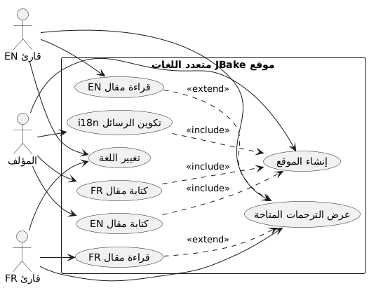
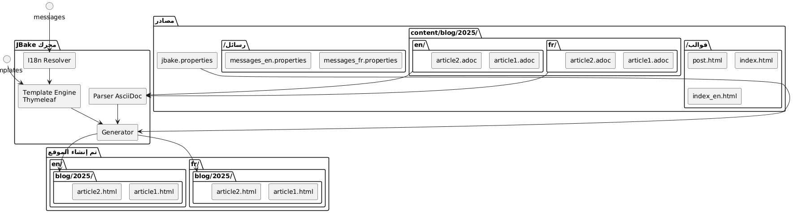
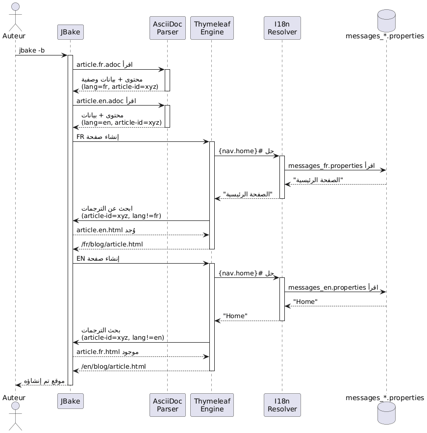
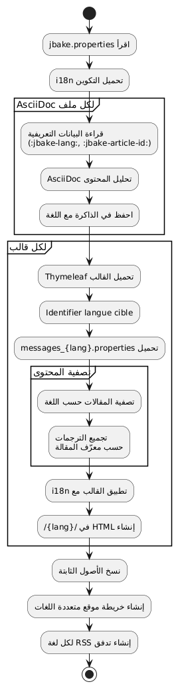
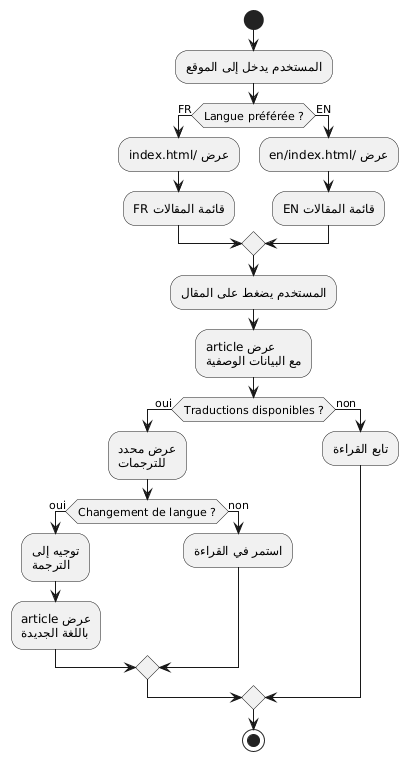
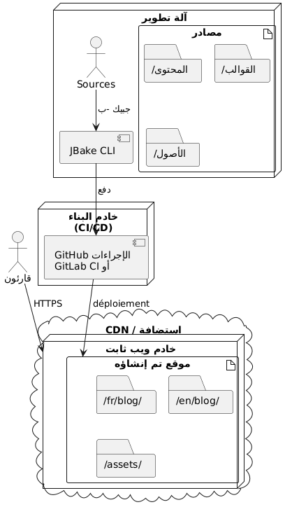

التدويل لموقع ثابت JBake باستخدام Thymeleaf
نُشر في 20 October 2025
مقدمة
يمكن أن يبدو تطبيق الت internazionale (i18n) لموقع ثابت معقدًا في البداية، لكن JBake جنبًا إلى جنب مع Thymeleaf يوفران حلولًا أنيقة لإنشاء موقع متعدد اللغات. في هذا المقال، سأريكم كيف قمت بإعداد i18n على مدونتي، مع تغطية كلٍ من التemplat وإدارة المقالات بلغات متعددة.
رسم بياني لحالة الاستخدام (حالة استخدام)

هندسة المعمارية للتعميم
نهجنا يرتكز على عمودين :
-
التدويل للقالباستخدام ملفات رسائل Thymeleaf لعناصر الواجهة
-
التدويل للمحتوىتنظيم المقالات حسب اللغة داخل بنية مجلدات مخصصة
مخطط الهيكل (تنظيم الملفات)

لماذا هذا النهج؟
هذا الفصل يسمح :
-
الحفاظ على الاتساق في الواجهة بغض النظر عن اللغة
-
إدارة المحتوى وترجمات المقالات بشكل مستقل
-
تسهيل إضافة لغات جديدة دون إعادة هيكلة رئيسية
-
تمكين المقالات المتوفرة فقط في بعض اللغات
مخطط المكونات

التدويل للقالب باستخدام Thymeleaf
بنية ملفات الرسائل
الخطوة الأولى هي إنشاء ملفات الخصائص لكل لغة مدعومة:
src/jbake/templates/
├── messages.properties # Fallback par défaut
├── messages_fr.properties # Français
├── messages_en.properties # Anglais
└── messages_de.properties # Allemandمحتوى ملفات الرسائل
هذا مثال لملف`messages_fr.properties`:
# Navigation
nav.home=Accueil
nav.blog=Blog
nav.about=À propos
nav.contact=Contact
# Articles
article.readmore=Lire la suite
article.published=Publié le
article.tags=Étiquettes
article.also.available=Également disponible en
# Interface
site.title=Mon Blog Technique
site.description=Partage de connaissances et expériences
footer.copyright=© 2025 Tous droits réservés
search.placeholder=Rechercher un article...ومثيله بالإنجليزية`messages_en.properties`:
# Navigation
nav.home=Home
nav.blog=Blog
nav.about=About
nav.contact=Contact
# Articles
article.readmore=Read more
article.published=Published on
article.tags=Tags
article.also.available=Also available in
# Interface
site.title=My Tech Blog
site.description=Sharing knowledge and experiences
footer.copyright=© 2025 All rights reserved
search.placeholder=Search articles...الاستخدام في القوالب
في قوالب Thymeleaf الخاصة بك، استخدم الصياغة`#{}`للوصول إلى الرسائل :
<!DOCTYPE html>
<html xmlns:th="http://www.thymeleaf.org">
<head>
<title th:text="#{site.title}">Mon Blog</title>
<meta name="description" th:content="#{site.description}" />
</head>
<body>
<nav>
<a th:href="@{/}" th:text="#{nav.home}">Accueil</a>
<a th:href="@{/blog/}" th:text="#{nav.blog}">Blog</a>
<a th:href="@{/about.html}" th:text="#{nav.about}">À propos</a>
</nav>
<footer>
<p th:text="#{footer.copyright}">Copyright</p>
</footer>
</body>
</html>مخطط التسلسل - الحل i18n

إعدادات الإقليم في JBake
في ملفك`jbake.properties`, اضبط الإعدادات الافتراضية :
# Locale par défaut
thymeleaf.locale=fr
# Encodage
template.encoding=UTF-8I18n المقالات : التنظيم حسب المجلدات
مخطط التدفق (Flow) - توليد

هيكل المجلدات
بدلاً من استخدام البادئات في أسماء الملفات، اخترت تنظيمًا بالمجلدات يوفر وضوحًا وقابلية للصيانة أكبر:
content/blog/
├── 2024/
│ ├── fr/
│ │ ├── introduction-jbake.adoc
│ │ ├── guide-thymeleaf.adoc
│ │ └── astuces-asciidoc.adoc
│ └── en/
│ ├── introduction-jbake.adoc
│ ├── thymeleaf-guide.adoc
│ └── asciidoc-tips.adoc
└── 2025/
├── fr/
│ └── internationalisation-jbake.adoc
└── en/
└── jbake-internationalization.adocمزايا هذا النهج
هذه البنية تقدم عدة مزايا :
-
انفصال واضحلكل لغة مساحة خاصة بها
-
التسمية المرنةقد يكون للملفات أسماء مختلفة حسب اللغة
-
قابلية التوسع: من السهل إضافة لغة جديدة
-
تنظيم طبيعييتبع المنطق الزمني لـJBake
بيانات التعريف للمقالات
يجب أن تحتوي كل مقالة على بيانات تعريفية للتمكن من الربط بين الترجمات. وهنا مثال:
النسخة الفرنسية (2025/fr/internationalisation-jbake.adoc) :
= Internationalisation d'un site statique JBake
:jbake-type: post
:jbake-status: published
:jbake-date: 2025-10-20
:jbake-lang: ar
:jbake-article-id: jbake-i18n-thymeleaf
:jbake-tags: jbake, thymeleaf, i18n
:jbake-description: Guide pour mettre en place l'i18n avec JBakeالنسخة الإنجليزية(2025/en/jbake-internationalization.adoc) :
= Internationalizing a JBake Static Site
:jbake-type: post
:jbake-status: published
:jbake-date: 2025-10-20
:jbake-lang: ar
:jbake-article-id: jbake-i18n-thymeleaf
:jbake-tags: jbake, thymeleaf, i18n
:jbake-description: Guide to implement i18n with JBakeملاحظة: السمة`:jbake-article-id:`هو حاسم: يتيح ربط الترجمات المختلفة لنفس المقال.
إعداد عناوين URL
في`jbake.properties`, اضبط نمط عنوان URL ليشمل اللغة :
# Pattern d'URL avec langue
post.permalink.pattern=:lang/blog/:year/:name.html
# Langue par défaut
site.default.lang=frسيولد ذلك عناوين URL من النوع :
-
/fr/blog/2025/internationalisation-jbake.html -
/en/blog/2025/jbake-internationalization.html
قوالب للعرض متعدد اللغات
قالب المقالة مع محدد للغة
أنشئ قالب`post.html`الذي يعرض الترجمات المتاحة :
<!DOCTYPE html>
<html xmlns:th="http://www.thymeleaf.org">
<head>
<title th:text="${content.title}">Article</title>
</head>
<body>
<article>
<header>
<h1 th:text="${content.title}">Titre</h1>
<div class="article-meta">
<time th:text="${#dates.format(content.date, 'dd MMMM yyyy')}"
th:attr="datetime=${#dates.format(content.date, 'yyyy-MM-dd')}">
Date
</time>
<!-- Sélecteur de traductions -->
<div class="translations" th:if="${content['article-id']}">
<span th:text="#{article.also.available}">Aussi disponible en :</span>
<ul class="language-list">
<li th:each="post : ${published_posts}"
th:if="${post['article-id'] == content['article-id'] and post.lang != content.lang}">
<a th:href="${post.uri}"
th:text="${post.lang.toUpperCase()}">
LANG
</a>
</li>
</ul>
</div>
</div>
</header>
<div class="content" th:utext="${content.body}">
Contenu de l'article
</div>
<footer class="article-footer">
<div class="tags" th:if="${content.tags}">
<span th:text="#{article.tags}">Étiquettes :</span>
<span th:each="tag : ${content.tags}">
<a th:href="@{/tags/{tag}.html(tag=${tag})}"
th:text="${tag}">tag</a>
</span>
</div>
</footer>
</article>
</body>
</html>فهرس مصفى حسب اللغة
قم بإنشاء قوالب الفهرس لكل لغة:
index.html(الفهرس الفرنسي):
<!DOCTYPE html>
<html xmlns:th="http://www.thymeleaf.org">
<head>
<title th:text="#{site.title}">Mon Blog</title>
</head>
<body>
<main>
<h1 th:text="#{nav.blog}">Blog</h1>
<div class="articles-list">
<article th:each="post : ${published_posts}"
th:if="${post.lang == 'fr'}">
<h2>
<a th:href="${post.uri}" th:text="${post.title}">Titre</a>
</h2>
<time th:text="${#dates.format(post.date, 'dd MMMM yyyy')}">
Date
</time>
<p th:text="${post.description}">Description</p>
<a th:href="${post.uri}" th:text="#{article.readmore}">
Lire la suite
</a>
</article>
</div>
</main>
</body>
</html>index_en.html(مؤشر إنجليزي)
<!DOCTYPE html>
<html xmlns:th="http://www.thymeleaf.org">
<head>
<title th:text="#{site.title}">My Blog</title>
</head>
<body>
<main>
<h1 th:text="#{nav.blog}">Blog</h1>
<div class="articles-list">
<article th:each="post : ${published_posts}"
th:if="${post.lang == 'en'}">
<h2>
<a th:href="${post.uri}" th:text="${post.title}">Title</a>
</h2>
<time th:text="${#dates.format(post.date, 'dd MMMM yyyy')}">
Date
</time>
<p th:text="${post.description}">Description</p>
<a th:href="${post.uri}" th:text="#{article.readmore}">
Read more
</a>
</article>
</div>
</main>
</body>
</html>التنقل بين اللغات
محدد اللغة العالمي
مخطط تدفق - قراءة المستخدم

أضف محدد اللغة في قالبك الرئيسي :
<nav class="language-switcher">
<a href="/index.html"
th:classappend="${content.lang == 'fr'} ? 'active'"
title="Français">
🇫🇷 FR
</a>
<a href="/en/index.html"
th:classappend="${content.lang == 'en'} ? 'active'"
title="English">
🇬🇧 EN
</a>
</nav>نمط CSS للمحدد
.language-switcher {
display: flex;
gap: 1rem;
padding: 0.5rem;
background: #f5f5f5;
border-radius: 4px;
}
.language-switcher a {
padding: 0.5rem 1rem;
text-decoration: none;
color: #333;
border-radius: 4px;
transition: background 0.2s;
}
.language-switcher a:hover {
background: #e0e0e0;
}
.language-switcher a.active {
background: #007bff;
color: white;
}
.translations {
margin: 1rem 0;
padding: 1rem;
background: #f8f9fa;
border-left: 4px solid #007bff;
}
.language-list {
display: inline-flex;
gap: 0.5rem;
list-style: none;
padding: 0;
margin: 0;
}
.language-list li::after {
content: "•";
margin-left: 0.5rem;
}
.language-list li:last-child::after {
content: "";
}موجز RSS حسب اللغة
للحصول على تدفقات RSS منفصلة حسب اللغة، أنشئ نماذج مميزة :
feed.xml(تيار فرنسي) :
<?xml version="1.0" encoding="UTF-8"?>
<rss version="2.0" xmlns:th="http://www.thymeleaf.org">
<channel>
<title th:text="#{site.title}">Mon Blog</title>
<link th:text="${config.site_host}">http://example.com</link>
<description th:text="#{site.description}">Description</description>
<language>fr</language>
<item th:each="post : ${published_posts}"
th:if="${post.lang == 'fr'}">
<title th:text="${post.title}">Titre</title>
<link th:text="${config.site_host + post.uri}">Lien</link>
<pubDate th:text="${#dates.format(post.date, 'EEE, dd MMM yyyy HH:mm:ss Z')}">
Date
</pubDate>
<description th:text="${post.description}">Description</description>
</item>
</channel>
</rss>ممارسات جيدة ونصائح
الاتساق في معرّفات المقال
تأكد من`:jbake-article-id:`هو نفسه لجميع ترجمات المقال الواحد. استخدم تنسيقًا موحدًا :
-
يفضل استخدام المعرّفات بالإنجليزية من أجل العالمية
-
استخدم الشرطة لفصل الكلمات
-
تجنب الأحرف الخاصة
2. التواريخ المتسقة
يجب أن تكون جميع الترجمات لمقال واحد بنفس تاريخ النشر`:jbake-date:`). هذا يسهّل الفرز والعرض الزمني
3. العلامات متعددة اللغات
بالنسبة للوسوم، لديك خياران :
الخيار 1 : علامات عالمية باللغة الإنجليزية
:jbake-tags: java, spring-boot, microservicesالخيار 2 : العلامات المترجمة مع الخريطة
# Version française
:jbake-tags: java, spring-boot, microservices
# Version anglaise
:jbake-tags: java, spring-boot, microservices4. إدارة المقالات غير المترجمة
ليس من الضروري ترجمة جميع المقالات. إذا كان المقال موجودًا فقط بلغة واحدة، فلن يظهر ببساطة في قوائم اللغة الأخرى.
خريطة موقع متعددة اللغات
أنشئ خريطة موقع تشمل جميع اللغات :
<?xml version="1.0" encoding="UTF-8"?>
<urlset xmlns="http://www.sitemaps.org/schemas/sitemap/0.9"
xmlns:xhtml="http://www.w3.org/1999/xhtml"
xmlns:th="http://www.thymeleaf.org">
<url th:each="post : ${published_posts}">
<loc th:text="${config.site_host + post.uri}">URL</loc>
<lastmod th:text="${#dates.format(post.date, 'yyyy-MM-dd')}">Date</lastmod>
<!-- Liens alternatifs pour les traductions -->
<xhtml:link th:each="translation : ${published_posts}"
th:if="${translation['article-id'] == post['article-id'] and translation.lang != post.lang}"
rel="alternate"
th:attr="hreflang=${translation.lang},href=${config.site_host + translation.uri}" />
</url>
</urlset>خاتمة
إنّ إضفاء صبغة دولية على موقع JBake باستخدام Thymeleaf هو نهج قوي وقابل للصيانة. من خلال فصل i18n عن القالب (ملفات الرسائل) وفصل i18n عن المحتوى (تنظيم المجلدات)، تحصل على نظام مرن يمكن أن يتطور بسهولة.
النقاط الرئيسية التي يجب تذكرها :
-
ملفات رسائل ثيمليفللواجهة المستخدم
-
تنظيم حسب المجلدات(سنة/لغة) للمقالات
-
معرفات المقاللربط الترجمات
-
قوالب مخصصةلكل لغة
-
روابط صريحةبما في ذلك رمز اللغة
مخطط النشر

تسمح لك هذه الهندسة بالبدء ببساطة مع لغتين وإضافة لغات أخرى دون الحاجة إلى إعادة هيكلة رئيسية. ويظل كل شيء ثابتًا بالكامل وأداءً جيدًا، مخلصًا لفلسفة JBake.
تطوير متعدد اللغات جيد! 🌍